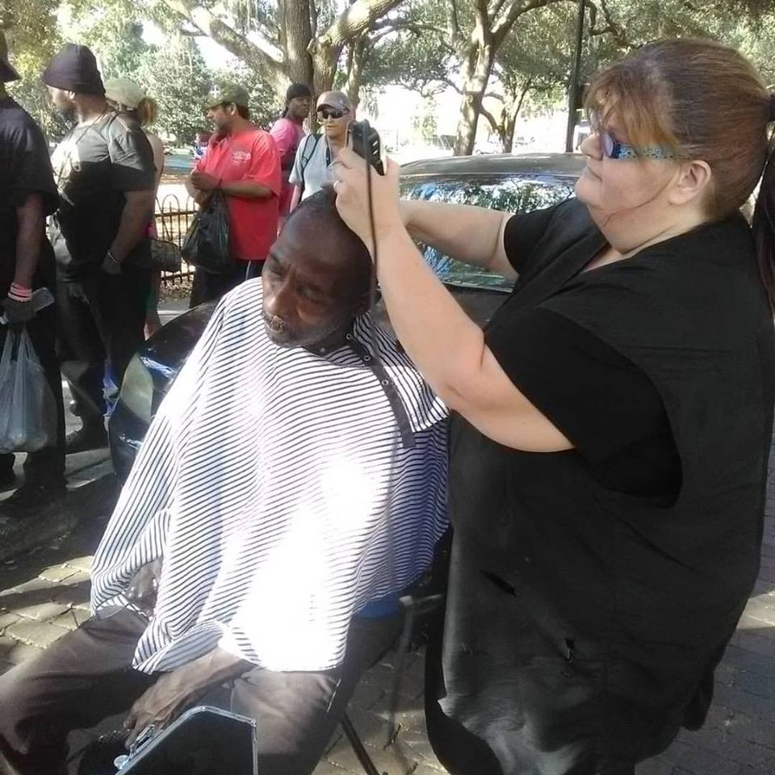
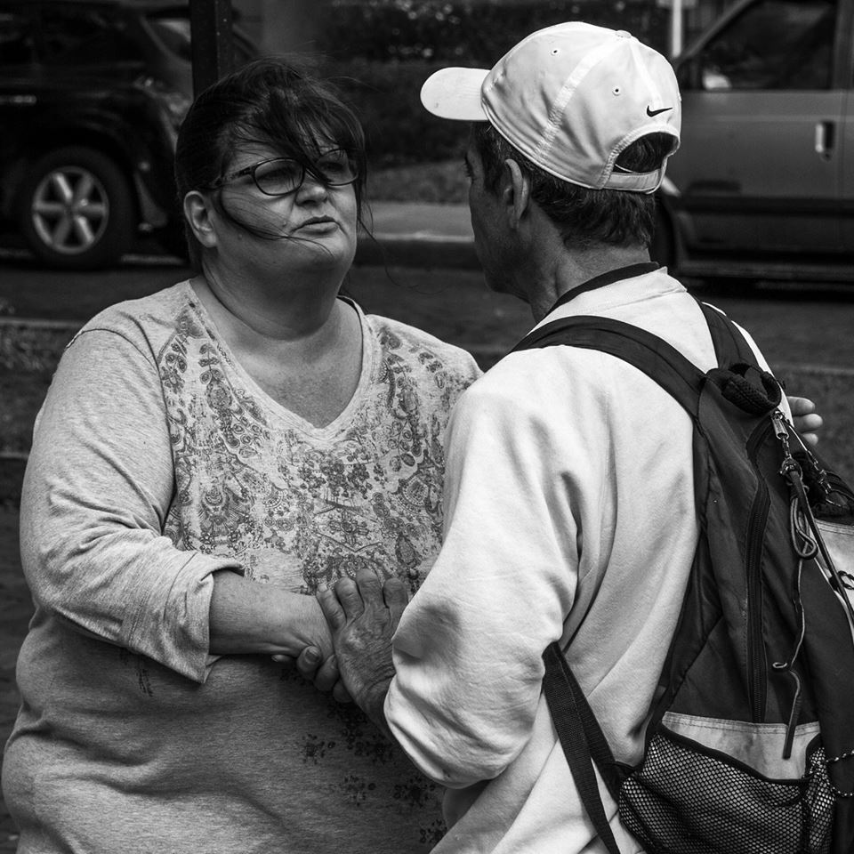
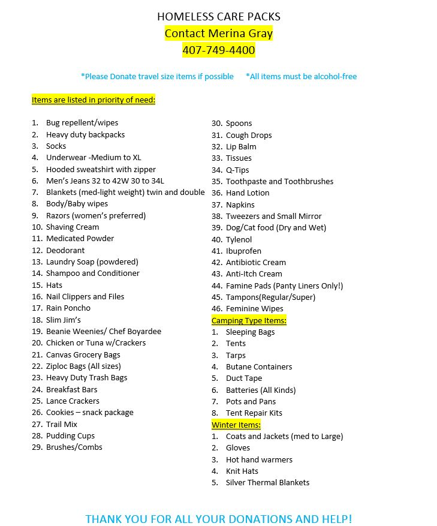

To lift up the hurting, restore the broken, and give compassion to those who are in great need.
We are a non-profit group actively providing for the homeless with meals, toiletries, and haircuts every Monday afternoon at Lake Eola.
Throughout the week we network with other care groups in the greater Orlando area to share resources to help those in need.
We started off with just a few people each week, but since then word has spread thanks to the community and local news channels and now
dozens of homeless people turn up in need of a haircut or supplies.

Many people see the homeless as bums, addicts, or alcoholics, but Merina wants to change this misconception. Homeless people are just that, people.
They are people who are in unfortunate circumstances but many work their hardest to get their way back into society. The supplies provided by the
local care groups, community donations, and Merina herself go a long way in helping these people, but we ask for nothing in return, only to see
smiling faces from the people we help. A decent haircut can go a long way in making someone feel better about themselves and make
them look more proffesional when applying for a job.
Merina Gray has been proffesionally cutting hair since 1988, and decided to put her skills to use for the greater good and help as many people
down on their luck as she can. She provides her help and skills every Monday at Eola park and wishes to open a sort of "hub" for the homeless
where they can come and wash their clothes, keep their belongings in lockers, and aid them in filling out their ID's or Social Secuirty Cards.
The Merina Gray Homeless Ministry accepts any and all donations through contacting Merina on our Contact page, our through our
GoFundMe. Below is a lsit of our current donation needs.
